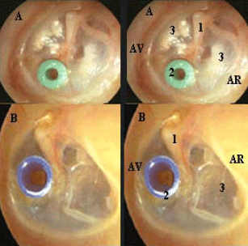

Bienvenue Sur Medical Education
La chambre implantable
Definition
La chambre implantable ou chambre a cather implantable (CCI) est un reservoir d’acces vasculaire central, implante sous la peau, pour l'injection de medicaments.
Cadre legislatif
Prelevements sanguins relevant du rele sur prescription medicale : art. R.4311-7 decret 2004-802 du 29/07/2004.
Injections relevant du rele sur prescription medicale : art. R.4311-7 decret 2004-802 du 29/07/2004.
Surveillance relevant du rele propre infirmier : art. R. 4311-5 decret 2004-802 du 29/07/2004.
Objectifs
Acces repete au systeme vasculaire.
Realisation de traitement ambulatoire.
Augmenter le confort du patient.
Reduire le risque infectieux.
Indications
Preserver le capital veineux.
Injections et perfusions medicamenteuses en continues.
Chimiotherapie anti-cancereuse.
Alimentation parenterale.
Faire des prelevements sanguins.
Contre-indications
Allergie au silicone.
Trouble de la coagulation.
Compression vasculaire.
Hemophilie.
Descriptif de la chambre implantable
La chambre implantable est constituee de 3 parties :
La chambre ou reservoir compose du septum en silicone : partie superieur oe sont faites les injections, constituee d'une membrane en silicone auto-obstructive.
Le catheter : en silicone ou en polyurethane radio-opaque qui relie la chambre au reseau veineux, il est fixe a la chambre par un systeme de verrouillage en acier.
Le systeme de verrouillage.

Les lieux d'implantation
Thoracique : veine sous-claviere ou veine jugulaire.
Iliaque : veine iliaque, veine cave inferieur.
Intra arteriel : in situ a un organe.
Intra peritoneal : dans le peritoine.
Intra rachidien : pour un traitement antalgique, canal arachnoedien.
Risques et Complications
Infection :
Asepsie rigoureuse, environnement propre, materiel sterile a usage unique.
Desinfection de la peau.
Mettre un masque au patient et lui faire tourner la tete.
- Risque de retournement de la chambre implantable :
- Avant de la manipuler, reperer obligatoirement la chambre entre 2 doigts.
- Pour piquer, ne jamais lecher la chambre et toujours la maintenir.
- Pour depiquer, ne jamais lecher la chambre et toujours la maintenir.
- Thrombose veineuse ou obstruction du catheter :
- Avant d’injecter, s’assurer de la permeabilite du catheter, verifier le reflux a chaque manipulation, apres le reflux, faire un rineage abondant.
- Remplir une seringue de serum physiologique et pousser : si resistance, il y a obstruction, ne plus pousser.
- Toujours rincer les chambres abondamment au moment du debranchement, du branchement et entre chaque traitement.
- Risque d’extravasation : epanchement de produit injecte en dehors de la chambre avec diffusion dans les tissus peri-vasculaires.
- Risque de desunion du catheter et de la chambre.
- Risque d’embolie gazeuse :
- Toujours travailler avec du materiel purge.
- Toujours manipuler en systeme clos.
- Prendre systematiquement des seringues a pas de vis.
Regles de manipulation de la chambre implantable
Toujours utiliser une aiguille a pointe de Huber : biseau tangentiel afin d'eviter d'enlever une carotte du septum de la chambre implantable.
Utiliser une seringue a verrou : evite les problemes d'etancheite.
Utiliser une seringue superieur ou egale a 10 ml : pour ne pas exercer une pression trop forte qui pourrait entraener une rupture du catheter.
Maintenir le systeme ferme et en pression continue : pour eviter une embolie gazeuse et le reflux sanguin dans le catheter (risque de coagulation).
Maintenir fermement la chambre entre deux doigts lors des manipulations : permet d'avoir un geste precis et efficace. Evite le retournement du boetier et des douleurs.
Piquer perpendiculairement : pour eviter de leser la membrane et la rendre permeable.
Piquer jusqu'e la butee de l'aiguille : pour etre certain d'injecter dans la chambre.
Injecter du serum physiologique avant toute injection medicamenteuse : diminue les risques lies a l'extravasation et les obstructions.
Injecter sans exercer de pression trop forte : pour ne pas depasser un eventuel thrombus ou de creer une rupture du catheter.
Verifier l'etat cutane avant tout soin : diminue le risque infectieux.
Rincer la chambre apres chaque manipulation : evite l'apparition d'un thrombus qui nuirait a la permeabilite du catheter.
Alcoolisation apres passage de nutrition parenterale : evite l'obstruction du catheter.
Tout retrait d'aiguille de Huber ou gripper se fait en pression positive.
Conduite a tenir en cas d'extravasation
Arreter la perfusion mais ne pas depiquer.
Prevenir le medecin.
Delimiter les contours du territoire extravase par un crayon dermographique indelebile.
Conserver le dispositif d'injection en place.
Aspirer 3 a 5 ml de sang pour retirer le maximum de produit anticancereux.
Injecter 5 a 10 ml de serum physiologique afin de diluer le medicament.
Puis aspirer a l'aiguille courte le maximum de produit infiltre.
Retirer le dispositif d'injection.
Soins infirmiers pour la pose d'une chambre implantable
Soins en pre-operatoire
Lieu d’implantation decide avec l’accord du patient.
Preparation psychologique du patient.
Preparation physique : douche antiseptique, rasage, habillement pour bloc chirurgical.
Pose au bloc operatoire, sous anesthesie generale ou locale, par un chirurgien.
Soins en post-operatoire
Contrele radiologique du thorax pour verifier le bon positionnement du catheter.
1ere injection par le chirurgien au bloc operatoire.
Surveiller si hematome.
Surveillance d'un syndrome inflammatoire ou infectieux : temperature.
Ablation de fils vers J7 - J0.
Education du patient :
Donner un carnet de suivi, prevenir du de la chambre implantable avant tout examen.
Prise de douches possibles. Vivre normalement.
Ne pas mettre de bretelles, attention avec la ceinture de securite routiere.
Proscrire les sports violents.
Surveillances
Surveiller les signes d’infection local (rougeur, ecoulement, gonflement) et generaux (hyperthermie, sueur, frissons).
Surveiller l'apparition d'un hematome.
Surveiller et prevenir les risques lors de la manipulation.
Contrele radiologique thoracique pour verifier le bon positionnement de la chambre.
Voir aussi :
Soins infirmiers : utilisation d'une chambre a catheter implantable
Module Gynecologie Maternite
Module Hematologie Cancerologie